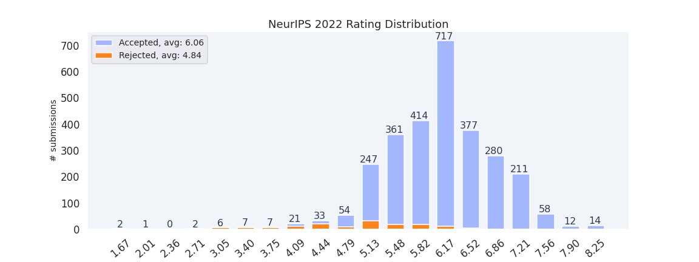

NeurIPS 2022 Statistics
Fork me on Github
Rating distribution

More statistics info
A browser extension
(
/
) to get submission info quickly
All Submissions
Statistics
#
Title
Rating(avg)
Ratings
Decision
1
Statistical Learning and Inverse Problems: A Stochastic Gradient Approach
6.67
8, 5, 7
Accept
2
Efficiency Ordering of Stochastic Gradient Descent
6.25
5, 6, 7, 7
Accept
3
Self-Aware Personalized Federated Learning
5.67
7, 7, 3
Accept
4
Nonnegative Tensor Completion via Integer Optimization
6.33
7, 6, 6
Accept
5
TPU-KNN: K Nearest Neighbor Search at Peak FLOP/s
5.75
6, 5, 6, 6
Accept
6
Equivariant Networks for Crystal Structures
5.67
6, 4, 7
Accept
7
Gradient Descent Is Optimal Under Lower Restricted Secant Inequality And Upper Error Bound
6.50
7, 7, 7, 5
Accept
8
Decoupled Context Processing for Context Augmented Language Modeling
5.67
4, 5, 8
Accept
9
Planning to the Information Horizon of BAMDPs via Epistemic State Abstraction
6.25
7, 7, 6, 5
Accept
10
Trust Region Policy Optimization with Optimal Transport Discrepancies: Duality and Algorithm for Continuous Actions
6.00
5, 6, 7
Accept
11
Modeling Transitivity and Cyclicity in Directed Graphs via Binary Code Box Embeddings
5.33
6, 5, 5
Accept
12
Simple and Optimal Greedy Online Contention Resolution Schemes
5.50
4, 6, 5, 7
Accept
13
Evaluating Latent Space Robustness and Uncertainty of EEG-ML Models under Realistic Distribution Shifts
5.25
4, 7, 3, 7
Accept
14
COLD Decoding: Energy-based Constrained Text Generation with Langevin Dynamics
7.25
6, 8, 7, 8
Accept
15
From Gradient Flow on Population Loss to Learning with Stochastic Gradient Descent
6.25
7, 6, 6, 6
Accept
16
Fast Neural Kernel Embeddings for General Activations
6.50
6, 6, 7, 7
Accept
17
On Reinforcement Learning and Distribution Matching for Fine-Tuning Language Models with no Catastrophic Forgetting
6.67
7, 6, 7
Accept
18
Provably tuning the ElasticNet across instances
6.67
8, 7, 5
Accept
19
LAMP: Extracting Text from Gradients with Language Model Priors
6.33
7, 6, 6
Accept
20
ELIGN: Expectation Alignment as a Multi-Agent Intrinsic Reward
5.80
7, 4, 7, 7, 4
Accept
21
Explicable Policy Search
5.20
6, 3, 5, 7, 5
Accept
22
A Practical, Progressively-Expressive GNN
5.75
7, 7, 5, 4
Accept
23
The Impact of Task Underspecification in Evaluating Deep Reinforcement Learning
6.33
6, 7, 6
Accept
24
Chaotic Dynamics are Intrinsic to Neural Network Training with SGD
5.00
6, 3, 6
Accept
25
A PAC-Bayesian Generalization Bound for Equivariant Networks
5.50
4, 6, 6, 6
Accept
26
Autoregressive Perturbations for Data Poisoning
6.00
6, 6, 7, 5
Accept
27
Near-Optimal No-Regret Learning Dynamics for General Convex Games
6.50
7, 6, 6, 7
Accept
28
Learning the Structure of Large Networked Systems Obeying Conservation Laws
6.00
4, 7, 7, 6
Accept
29
Neural Payoff Machines: Predicting Fair and Stable Payoff Allocations Among Team Members
5.33
5, 7, 4
Accept
30
Implicit Neural Representations with Levels-of-Experts
6.75
8, 7, 7, 5
Accept
31
LieGG: Studying Learned Lie Group Generators
6.33
7, 6, 6
Accept
32
Local Bayesian optimization via maximizing probability of descent
7.00
6, 8, 7, 7
Accept
33
A Closer Look at Learned Optimization: Stability, Robustness, and Inductive Biases
6.25
5, 7, 6, 7
Accept
34
Empirical Gateaux Derivatives for Causal Inference
5.67
4, 7, 6
Accept
35
Adaptive Interest for Emphatic Reinforcement Learning
6.50
7, 6, 7, 6
Accept
36
Human-Robotic Prosthesis as Collaborating Agents for Symmetrical Walking
6.00
6, 5, 7
Accept
37
Uni[MASK]: Unified Inference in Sequential Decision Problems
8.00
8, 7, 9
Accept
38
Leveraging the Hints: Adaptive Bidding in Repeated First-Price Auctions
6.75
7, 7, 6, 7
Accept
39
ReCo: Retrieve and Co-segment for Zero-shot Transfer
5.00
4, 4, 6, 6, 5
Accept
40
Boosting the Performance of Generic Deep Neural Network Frameworks with Log-supermodular CRFs
5.67
6, 6, 5
Accept
41
End-to-end Stochastic Optimization with Energy-based Model
6.25
8, 6, 6, 5
Accept
42
Context-enriched molecule representations improve few-shot drug discovery
5.33
5, 7, 4
Reject
43
EAGER: Asking and Answering Questions for Automatic Reward Shaping in Language-guided RL
6.00
6, 6, 8, 4
Accept
44
A Causal Analysis of Harm
5.20
3, 5, 5, 6, 7
Accept
45
The Slingshot Mechanism: An Empirical Study of Adaptive Optimizers and the \emph{Grokking Phenomenon}
5.33
5, 5, 6
Reject
46
On-Demand Sampling: Learning Optimally from Multiple Distributions
7.25
8, 7, 7, 7
Accept
47
Logical Activation Functions: Logit-space equivalents of Probabilistic Boolean Operators
6.67
6, 7, 7
Accept
48
Dynamic pricing and assortment under a contextual MNL demand
5.67
5, 6, 6
Accept
49
Off-Team Learning
6.00
5, 7, 6
Accept
50
A Deep Reinforcement Learning Framework for Column Generation
5.75
7, 5, 5, 6
Accept
51
Sublinear Algorithms for Hierarchical Clustering
6.00
6, 8, 3, 7
Accept
52
A Few Expert Queries Suffices for Sample-Efficient RL with Resets and Linear Value Approximation
6.25
7, 5, 6, 7
Accept
53
Certifying Some Distributional Fairness with Subpopulation Decomposition
6.33
7, 6, 6
Accept
54
Accelerating Certified Robustness Training via Knowledge Transfer
5.75
6, 7, 5, 5
Accept
55
Fairness in Federated Learning via Core-Stability
6.67
7, 7, 6
Accept
56
Learning NP-Hard Multi-Agent Assignment Planning using GNN: Inference on a Random Graph and Provable Auction-Fitted Q-learning
4.67
6, 4, 4
Accept
57
Memory safe computations with XLA compiler
6.00
7, 6, 5
Accept
58
A Communication-efficient Algorithm with Linear Convergence for Federated Minimax Learning
5.25
4, 5, 5, 7
Accept
59
On Efficient Online Imitation Learning via Classification
6.50
6, 6, 7, 7
Accept
60
AMP: Automatically Finding Model Parallel Strategies with Heterogeneity Awareness
5.75
6, 6, 6, 5
Accept
61
Nonstationary Dual Averaging and Online Fair Allocation
5.75
5, 6, 6, 6
Accept
62
New Definitions and Evaluations for Saliency Methods: Staying Intrinsic, Complete and Sound
7.25
7, 8, 6, 8
Accept
63
A Unified Framework for Deep Symbolic Regression
5.67
5, 5, 7
Accept
64
Pitfalls of Epistemic Uncertainty Quantification through Loss Minimisation
6.75
7, 7, 6, 7
Accept
65
Best of Both Worlds Model Selection
6.67
6, 7, 7
Accept
66
Structuring Representations Using Group Invariants
6.25
7, 7, 5, 6
Accept
67
The Query Complexity of Cake Cutting
6.00
6, 6, 4, 8
Accept
68
Structural Pruning via Latency-Saliency Knapsack
5.75
6, 4, 6, 7
Accept
69
Subgame Solving in Adversarial Team Games
5.00
6, 3, 6, 5
Accept
70
Multi-Game Decision Transformers
7.00
6, 8, 7, 7
Accept
71
Parameter-free Regret in High Probability with Heavy Tails
5.33
7, 5, 4
Accept
72
Learning to Compare Nodes in Branch and Bound with Graph Neural Networks
3.67
5, 3, 3
Accept
73
Communication Acceleration of Local Gradient Methods via an Accelerated Primal-Dual Algorithm with an Inexact Prox
6.25
7, 5, 6, 7
Accept
74
On the detrimental effect of invariances in the likelihood for variational inference
5.50
4, 6, 7, 5
Accept
75
BayesPCN: A Continually Learnable Predictive Coding Associative Memory
4.75
4, 5, 5, 5
Accept
76
Robustness to Unbounded Smoothness of Generalized SignSGD
6.00
6, 5, 7
Accept
77
Generalization for multiclass classification with overparameterized linear models
6.25
7, 6, 5, 7
Accept
78
Finite-Sample Maximum Likelihood Estimation of Location
6.25
6, 7, 6, 6
Accept
79
Graphein - a Python Library for Geometric Deep Learning and Network Analysis on Biomolecular Structures and Interaction Networks
6.75
6, 8, 7, 6
Accept
80
Root Cause Analysis of Failures in Microservices through Causal Discovery
4.00
4, 4, 4
Accept
81
Robust Model Selection and Nearly-Proper Learning for GMMs
7.00
8, 7, 5, 8
Accept
82
Explain My Surprise: Learning Efficient Long-Term Memory by predicting uncertain outcomes
5.00
5, 5, 5
Accept
83
Structural Knowledge Distillation for Object Detection
6.50
5, 7, 6, 8
Accept
84
 /
/ ) to get submission info quickly
/) to get submission info quickly
) to get submission info quickly
/) to get submission info quickly
{kind=link}